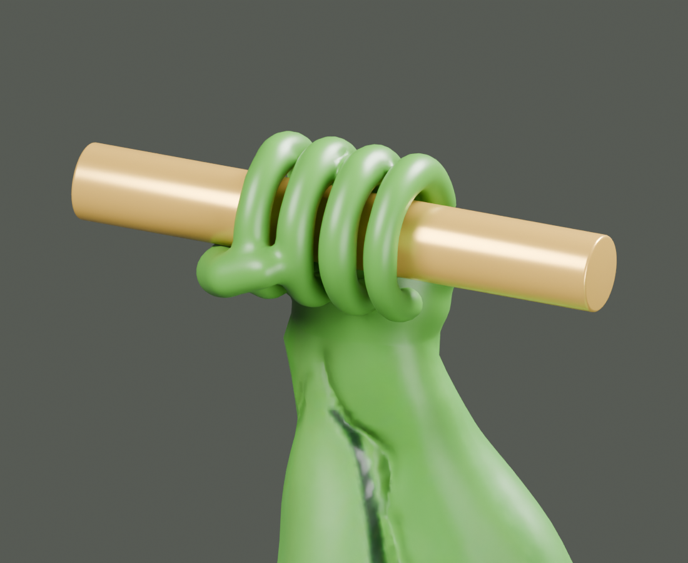
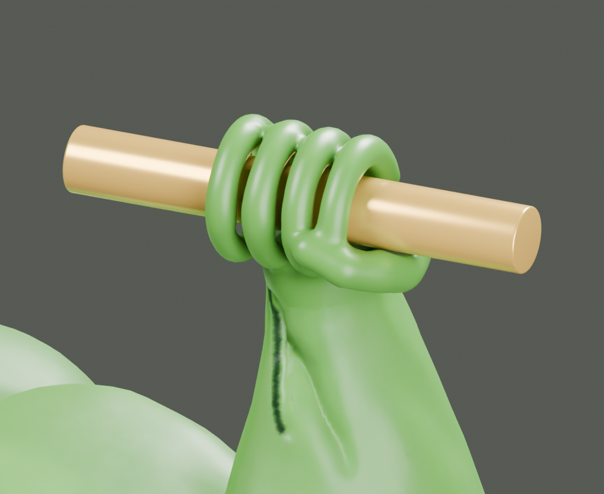

Pepe athletics / Asset workshop
Original retopology comparison ↗A grip on greatness.
New curled fingers, opposed thumbs, and open pole channels on a separate copy of the retopologized frog. Original files are preserved.
Drag to orbit · scroll to zoom
Loading copied GLB…

